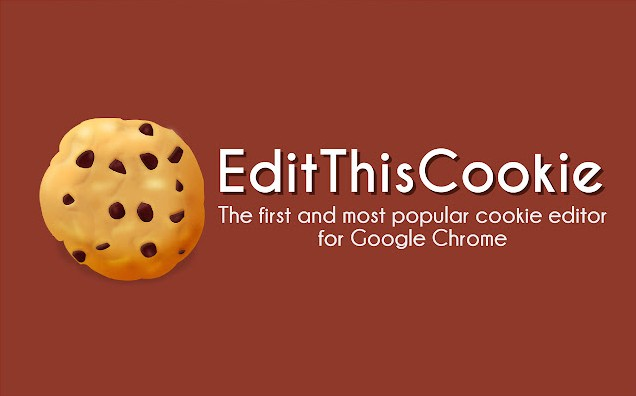
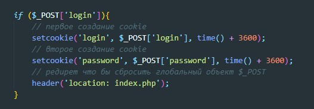

Для удобной работы с cookie можно использовать плагин для Google Chrome - EditThisCookie
Этот плагин показывает имеющиеся cookie на том или ином сайте
Все куки одного сайта записываются в глобальный объект $_COOKIE. Соответственно у другого сайта будет свой глобальный объект
Для создания cookie используется метод - setcookie. Этот метод имеет три аргумента:
Пример создания cookie
Что за последняя строчка? это редирект - для того что бы сбросить глобальный объект $_POST, а так же что бы получить данные cookie т.к. они записываются в глобальный объект ассинхронно. т.е. php скрипт отработал значения в cookie записались но мы ничего не увидим до тех пор пока не перезагрузим страницу.
Если мы будем пытаться записывать cookie или выполнять редирект после html кода то мы будем ловить Warning. Поэтому код работы с cookie и редиректом необходимо писать в самом верху файла. Если перед ним будет хотя бы echo c html то будет ошибка.